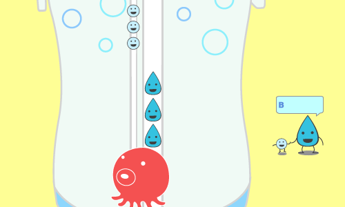
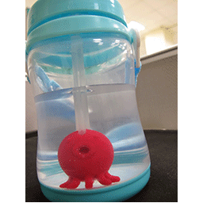
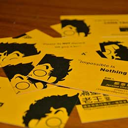
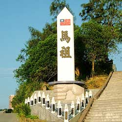
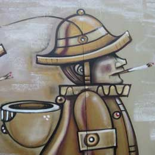
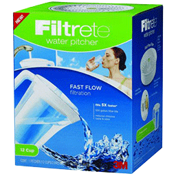
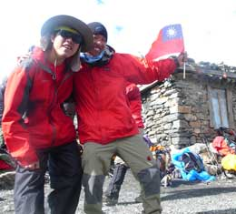

Experiences
-
Front-End Developer
Hey, there. I am Tsung-Ting, or you may call me Aaron si tu veux. Now I am seeking for a F2E position to build cool stuffs for the future! If you are finding someone with leadership and entrepreneurship on your marvelous journey, I should be the one.
-

Kickstarter
Finished our first prototype, Bubble-Up, to be launched on kickstarter. Planned the project timeframe, budget needed, and played as a project manager role. You may check our blog for more details.
-

Event Planner
Developed an official blog powered by WordPress. Applied 3 media channels to launch an affiliate marketing program with 6,000NT budget. Successfully collected 28 specs with a 350% boost in daily unique visitors (from 212 to 742). The register rate increased from 3% to 7%.
-
rawant.com is online!
Developed a crowdsourcing social website, rawant.com, focusing on realizing inventions from public sketches. Got 760 registered members, 100 monthly active users and 14,000 page views monthly in the last 6 months.
Collaborated with a PHP engineer. Responsible for information architecture, mock-up realization using modern HTML5/CSS3 techniques, Google Analytics and Facebook Ad Management implementation. Deployed to Amazon EC2.
-

Cofounder of Rawant
Led a 7-member-team with 3 working remotely. In charge of project management, data analysis, strategy planning, and website development.
rawant.com was a crowdsourcing social platform based in NTU Garage, Taipei, Taiwan. We wanted to "Make Your Doodles Happen," by uploading your innovative scripts, rawant.com would take care of the rest of it, including manufacturing, fundraising, and marketing.
-

Veteran
Finished a 1-year military service from Matzu, Taiwan. Ended up as a 2nd lieutenant. Searching for a good starting point for my career.
Started to learn coding concepts through Codecademy.
-

Company Counselor
Fulfilling mandatory military service as an officer in Army. Supervised a 100-private-company. In charge of counseling and management. Held recreation activities and maintained the morale during the transition of 3 company commander.
Took action in a corporal suicide incident: reassured relatives and prevented the aftermath stoked by the press. Reported to Director of Political Warfare.
-

Sales Promoter
As a part-time sales promoter under ActMedia, Taiwan. Promoted 3M filter jugs independently and negotiated for free gifts to customers. Increased 200% sales on weekend by analysis and observation.
-

Himalayan Adventurer
Involved in Annapurna Program(outdoor leadership under NTU Leadership Program). Involved in a 3 weeks trekking teams with international members. Attained the goal, Thorong la Pass (5,416m), Nepal.
-
YEFer
Chief Operating Officer of Hümex team in Young Entrepreneurs of the Future Program (12-member-team). Responsible for market research and assumption making. Made a consensus from 12 possible ideas and passed the 1st round selection (100 out of 250 trainees).
-
TOYPFer
Director of Administration in Ten Outstanding Young Persons' Foundation Student Association. Managed a department with 4 members; took charge of event planning and budgeting in 25th Leader Camp. Increased the camp size by 33% in the number of participants (from 60 to 80).